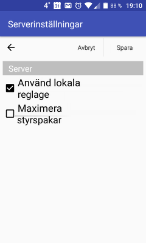
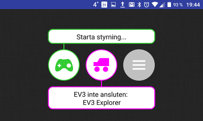
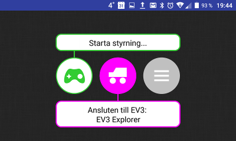
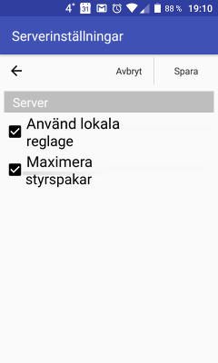

Version 1.4.2 · översatt artikel
Förvandla en smartphone till fjärrkontroll för roboten med RoboCam
Skärmbilderna är från originalartikeln och har retuscherats så att gränssnittstexten är på svenska. De orörda originalen visar det ryska gränssnittet.
I alla tidigare artiklar om appen RoboCam beskrev jag hur man styr en robot i förstaperson. Men ibland behövs inte förstapersonsstyrning — man vill bara göra telefonen till en fjärrkontroll. Den senaste versionen av RoboCam har just den möjligheten.

Den här artikeln beskriver de nya funktionerna i RoboCam version 1.4.2. Alla artiklar om RoboCam finns här. Du kan installera RoboCam från Google Play, eller ladda ner APK-filen och installera den manuellt: den vanliga versionen av RoboCam eller versionen av RoboCam som använder RenderScript (för vissa äldre telefoner); båda är utgåva 1.4.5. Det finns också en APKPure-spegling.
Allt från de tidigare versionerna av appen är oförändrat. Version 1.4.2 lägger bara till lokala reglage. De är av som standard och allt fungerar som förut. För att slå på lokala reglage, öppna serverinställningarna och markera «Använd lokala reglage». Alla andra serverinställningar försvinner då. Tryck på knappen «Spara». Om du inte vet var serverinställningarna finns, läs först den första artikeln om RoboCam.

Gå sedan tillbaka till huvudskärmen så ser du att den vänstra gröna knappen har ändrats. Nu visar den en styrspak. Du ser också att kameran nu är av.

Tryck på den mittersta lila knappen för att ansluta till roboten. Hur man ansluter till en robot och ställer in den beskrivs i detalj i den första artikeln om RoboCam. Tryck sedan på den vänstra gröna knappen för att öppna skärmen med de lokala reglagen, det vill säga styrspakarna.

Som du ser ser styrspakarna likadana ut som i webbläsaren när du styr roboten i förstaperson med RoboCam.

Men små styrspakar är opraktiska på en telefon med liten skärm, så gå tillbaka till serverinställningarna, markera «Maximera styrspakar» och tryck på knappen «Spara».

När du nu öppnar skärmen med de lokala reglagen ser du att styrspakarna har blivit större.

Förresten, om du ansluter ett tangentbord till telefonen kan du styra roboten från det. För att tangentbordet ska fungera måste dock RoboCam-appen vara aktiv och telefonen olåst. Läs mer om tangentbordsstyrning i den tredje artikeln om RoboCam.
Alla RoboCam-versioner
- v1.4.2 Förvandla en smartphone till fjärrkontroll för roboten med RoboCamdu är här
- v1.3.1 Bygg förstapersonsstyrning för en Arduino-robot
- v1.2 RoboCam – styr roboten i förstaperson med datorns tangentbord
- v1.1 Importera, exportera, kopiera och skicka robotinställningar i RoboCam
- v1.0 Styr en LEGO Mindstorms EV3-robot i förstaperson